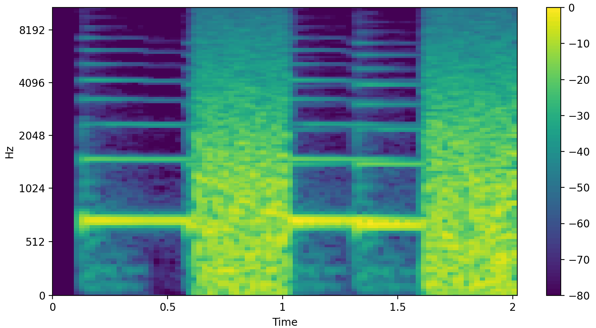

「 デモをためす」をクリックもしくはタップするとデモが始まり、途切れ途切れの「エリーゼのために」が流れてきます。スライダーの値を変化させると、音楽のなめらかさはどのように変わるでしょうか。デモの音を止めるにはスライダーの上にある「Stop」ボタンを押してください。同じ場所に表示される「Start」ボタンを押すと、ふたたび音が流れます。
説明
スライダーの値が大きくなるほど、雑音が短くなり、雑音と音楽の間のすき間（ギャップ）が長くなります。ギャップが長くなるほど、音楽は途切れ途切れに聞こえるようになります。これは、「マスキング可能性の法則」の時間領域版です。中断部分に挿入する音は、その部分に本来存在しているはずの音をマスキングできる（隠せる）ような時間的特性を持っていなくてはなりません。マスキングの効果は、隠す音（マスカー）の前後にも及びます（マスカーより後の部分の効果が大部分ですが）。したがって、このデモでも、少しくらいのギャップなら連続聴効果をさほど妨げないのです。
（『音のイリュージョン』p.17-20）
参考文献
- 「音のイリュージョン ― 知覚を生み出す脳の戦略 ―」 柏野牧夫著 岩波書店 2010年